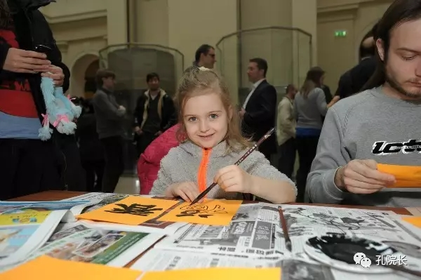
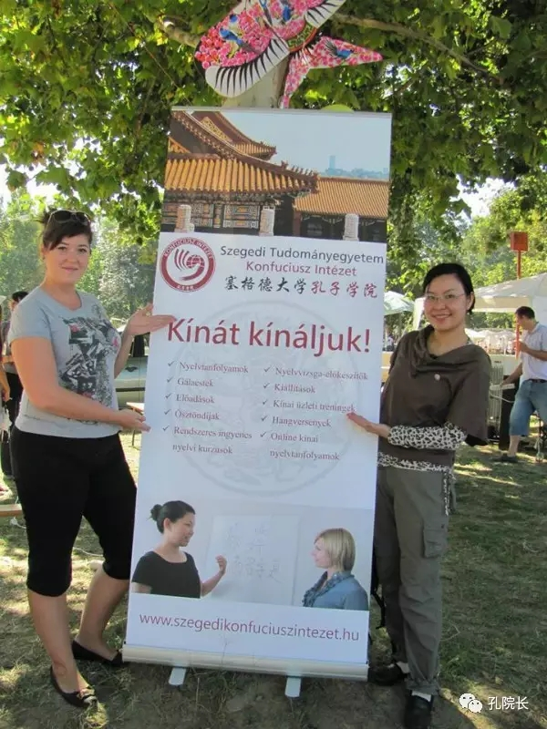
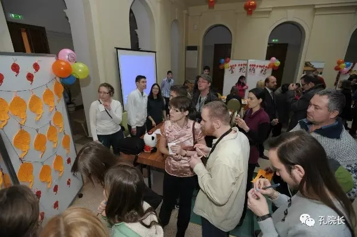
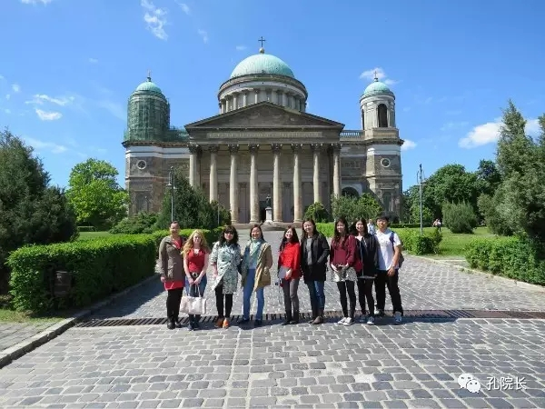
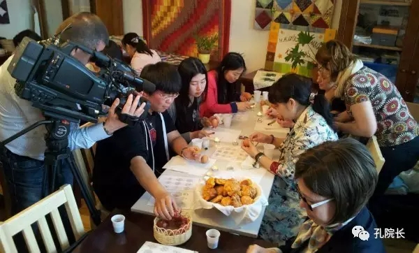
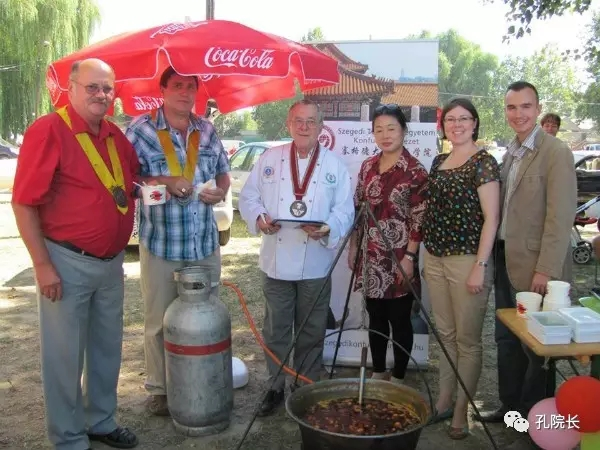
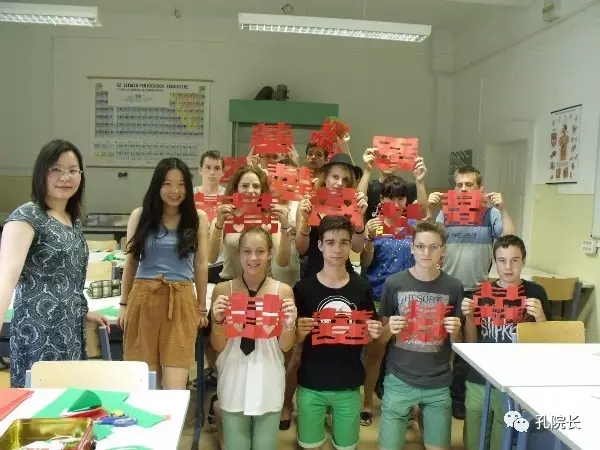

每日一篇——文化活动/匈牙利 用文化交融讲好中国故事
 641
641
来源：原创 作者：何敏
孔子学院是世界各国人民学习汉语和了解中华文化的园地、中外文化交流的平台、中国人民与世界各国人民友谊合作的桥梁。传播中华文化，树立中华民族良好的国家形象，培养知华、友华的外国学员是孔子学院的重要任务。如何完成好这个任务一直是教师重要的研究、实践课题。

文化的传播不是单向性的，而是建立在互相尊重互相了解的基础上的，特别是在欧洲这样一个多国家多文化多语言共存的社会大环境下更强调各种文化之间的平等和交流。匈牙利有着辉煌的过去，地大物博、经济文化发达、曾经是欧洲的强国，所以，匈牙利人的内心充满了民族自豪感。作为孔子学院的教师，我不仅仅是中华文化的传播者，同时也以学习者的心态来多角度了解匈牙利的语言文化。通过参加学院为教师专门开设的匈牙利语课、介绍匈牙利国情文化的讲座和学院组织的去匈牙利文化标志地诸如国会大厦、帝豪尼教堂、国家博物馆等处的文化考察，以及在复活节前夕去学习制作复活节彩蛋的民俗活动，让我对匈牙利的文化传统建立起较感性和全面的认知。

这些知识的积累和储备对我在日常教学实践中恰到好处地传播中华文化提供了有利条件，学员们一旦发现我不仅是中华文化的传播者，更是匈牙利文化的学习者、探究者，感受到我对匈牙利文化的兴趣和欣赏，在这种平等互重的氛围下，他们对中华文化也会萌发更大的兴趣，会以更开放的心态来看待和学习中华文化。
除了有文化融合的心态，我在日常教学实践中也特别注重两国文化的对接，在语言教学中融入人性的温情，在中华文化传播中融入匈牙利因素。如每当按课文要求向音乐素养颇高并以此自豪的匈牙利学员们介绍中国小提琴协奏曲《梁祝》时，我就会提到其作者之一陈刚曾师从匈牙利钢琴家瓦拉，以此让学生体会到中匈两国文化交往的源远流长。

此外，我也会在日常教学中创造条件在学习内容融入匈牙利因素的基础上融汇中华文化。如在语音教学中，选用匈牙利著名诗人裴多菲的《自由与爱情》殷夫1929年的译文让学员们标注拼音和声调，这样学员们就了解到早在20世纪20年代中国人就已经知晓匈牙利国民诗人裴多菲，他的代表作——《自由与爱情》即使在万里之遥的中国也是家喻户晓的，这大大激起了他们的民族自豪感，也拉近了中华文化与他们的心理距离，每次学习到这个环节大家都兴味盎然，情绪高涨，并在不知不觉中接触到中国五言律诗的体例，感受到中华诗歌文化的独特魅力。最后，我还会用照片向学员们展示上海鲁迅公园内的裴多菲纪念碑，以让他们了解到中国人对匈牙利文学的喜爱和尊重，从而增进他们对中国文化的好感。

中国不仅有源远流长的古老文明，也有先进的现代化。而塞格德是位于匈牙利南方的一座边陲小城，这里的人民生活平和封闭，再加上语言的隔阂，他们对中华文化，特别是中国现状知之甚少，所以每当课文中出现北京、上海等大城市时，我都会抓住机会见缝插针地为学员们作介绍， 通过各个城市的宣传片让学员们自然地感受中国经济的发达，人们的精神风貌，同时也会注重与匈牙利的对接，比如视频中出现上海的国际饭店，我就会特地定格，告诉学生上海年代最久的有三十年代远东第一高楼之称的国际饭店就是由匈牙利建筑师拉斯洛·邬达克设计的，上世纪二三十年代，他在上海设计了60多幢建筑作品，其中三分之一现在被列入上海市优秀近代建筑名录，为此上海还专门举办过他的纪念展。
为了加快中华文化拓展的速度，我争取各种机会将汉语学习和文化宣传融入到各教学点的学校生活中，利用学校开放日、国际文化节、新生欢迎会、节日庆祝会的机会积极将学员们的学习成果展示给各方来宾。我在日常教学就将部分教学内容歌曲化，在表演中选用国际通用的《生日歌》中文版本，还亲自将匈牙利人耳熟能详的民歌《春风颂》翻译成中文歌曲，以创造条件让不谙汉语的广大来宾们积极投入欣赏学员们的中国歌舞表演。

为了扩大文化活动的影响力和当地民众的参与积极性，我在日常的教学过程中还十分注重与重大文化活动融合，这种融合不仅仅限于活动的通知和宣传，更重要的是为学生提供文化体验的机会，为学员创造积极参与投入的条件。

比如在元宵节期间，我设计了让学员做红灯笼，打中国结挂灯笼，在灯笼上写汉字祝福语和匈牙利文祝福语的活动，并将他们的作品展示在元宵节活动现场，这样大大提高了他们对我们活动的参与感，很多学员专程带领家人和朋友来到活动现场指认自己制作的红灯笼。
又如，中国人过元宵节有猜灯谜的习俗，我们的元宵节活动也有这一活动环节，而字谜是中华谜语的一大特色，为了让大家更全面地体味中华谜语的魅力，我在准备灯谜时，除了准备一般的匈牙利谜语，还准备了一些简单有趣的字谜，如99（谜底：白），98（谜底：杂），一人（谜底：大）等，并把这些字谜融入日常汉字教学中，这样不仅提高了汉字学习的趣味性，也为学员们参加元宵节猜灯谜活动预先进行了知识储备，故此，猜灯谜活动一直是我们元宵节活动最受欢迎的活动。

中华文化海外传播涉及语言教学，文化活动组织的方方面面，文化融合是有效传播中华文化的前提和基础。正如国务院副总理、孔子学院总部理事会主席刘延东在第十届孔子学院大会的开幕致辞中所强调，当今世界，文明交流互鉴的大趋势为孔子学院发展带来难得的历史机遇和广阔空间。要突出特色，贴近各国不同的文化传统、习俗习惯，因地制宜，逐步实现孔子学院本土化。“国之交，在于民相亲；民相亲，在于心相通”,作为孔子学院工作第一线的教师更要身体力行，创造性地在平凡、细微的日常教学中以融合的心态有效地传播中华文化，为促进多样文明和谐共生做出新贡献。
作者简介：
姓名：何敏 上海外国语大学国际文化交流学院教师，2012年11月至2015年12月任教于匈牙利赛格德大学孔子学院。